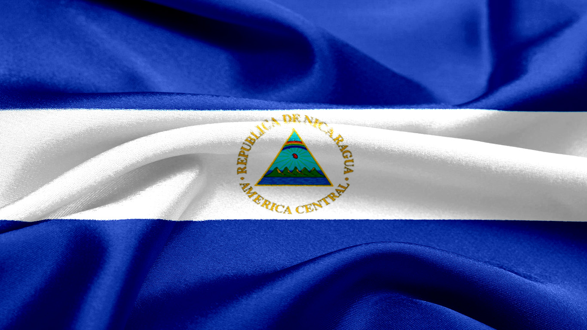
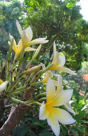

Simbolos patrios
Bandera Nacional
La Bandera Nicaragüense tiene tres franjas horizontales (dos azules, arriba y abajo) con el escudo nacional en el centro,
en la franja blanca. La franja blanca del Pabellón Nacional representa el territorio de la nación y
simboliza la pureza de Nicaragua.
Las dos franjas azules significan que Nicaragua está bañado por dos océanos.
El escudo nacional es un triángulo rodeado circularmente con las palabras REPÚBLICA DE NICARAGUA arriba y
AMÉRICA CENTRAL abajo.
Tiene la forma de un triángulo equilatero.
El triángulo significa IGUALDAD.
El arco iris significa PAZ.
El gorro frigio es símbolo de LIBERTAD.
Los cinco volcanes expresan la UNION y la FRATERNIDAD de los cinco países centroamericanos.

Flor Nacional
Esta colorida flor llamada Sacuanjoche, es la Flor Nacional de Nicaragua.
La Sacuanjoche crece en los árboles Plumerian Alba o Frangipani, un tipo de árbol muy angosto que florece en Mayo.
El nombre local es Sacuanjoche de origen Náhuatl.
La flor aparece en los billetes de 1,5, 10 y 25 centavos que no son frecuentemente utilizados.

Ave Nacional
Nombre en español: Guardabarranco Común
Nombre en Inglés: Turquoise-browed Motmot
Nombre en Latín: Eumomota superciliosa
El pájaro nacional es el Guardabarranco. Esta colorida ave es fácilmente reconocida por su larga cola rematada por dos plumas azul.
Los Guardabarranco comen principalmente insectos y cavan un hoyo en la tierra para poner sus huevos.
Pueden ser vistos en los bosques de Nicaragua, generalmente en el suroeste.
Sus habitats no están limitados por los limites departamentales, ya que puede ser visto hasta en la capital, Managua.

Historia
En 1524, las poblaciones de Granada y León fueron fundadas por Francisco Hernández de Córdoba en la zona de que hoy es Nicaragua.
En 1528 la Corona española erigió la Provincia de Nicaragua, que posteriormente pasó a depender de la Audiencia y Capitanía General de Guatemala, dependiente del Virreinato de la Nueva España hasta 1812.
En 1803, por intermedio de la Real Orden del 20 de noviembre, el rey de España ordenó segregar de la antigua Capitanía General de Guatemala, la Costa de Mosquitos como las islas de San Andrés y agregarlas al Virreinato de Nueva Granada. En 1894, tropas nicaragüenses al mando de Rigoberto Cabezas ocuparon la región, que fue organizada como el Departamento de Zelaya, dividido a fines del siglo XVII en dos regiones (Región Autónoma del Atlántico Norte y la Región Autónoma del Atlántico Sur). En 1812 las Cortes de Cádiz erigieron la Provincia de Nicaragua y Costa Rica (separada de la Provincia de Guatemala), y con cabecera en la ciudad de León. Esta provincia duró hasta 1814, año en que se restableció el reino de Guatemala. En 1820, al restablecerse el régimen constitucional, resurgió la Provincia de Nicaragua y Costa Rica, que estaba dividida en siete partidos.
Independencia
El 11 de octubre de 1821, la Diputación Provincial de Nicaragua y Costa Rica, reunida en León, proclamó la independencia absoluta de España y la unión al Primer Imperio Mexicano, encabezado por Agustín de Iturbide. Sin embargo, Granada y Costa Rica se separaron de la provincia, constituyendo gobiernos propios. En 1823, tras la caída del emperador Agustín I, Nicaragua se unió a la Unión Centroamericana, poco después transformada en la República Federal de Centroamérica (1824). La Federación no sobrevivió mucho tiempo, y Nicaragua fue el primer Estado en separarse de ella de modo definitivo, en 1838. Durante el siglo XIX se sucedieron diversos intentos de reunificar América Central, sin éxito.
Nicaragua tuvo una convulsa vida política durante la primera mitad del siglo XIX, al ser Nicaragua el puente entre los dos océanos que fue utilizado para el desplazamiento de pasajeros de la ruta del transito propiedad de Cornelius Vanderbilt, ruta por la que circulaban los aventureros, comerciantes y emigrantes que viajaban desde el pacifico de Estados Unidos, hasta California en donde hacia 1848-49 se habian descubierto yacimientos de oro, la convierten en un punto estrategico e importante en Centroamérica.
En 1854 los generales liberales Castellon y Jérez contratan a traves de Vanderbilt los servicios de Byron Cole, en calidad de mercenario, posteriormente Cole le cede el contrato a William Walker; Walker amparado bajo la doctrina Monroe, se proclama presidente de Nicaragua e intenta hacer de la nación centroamericana un nuevo miembro de los Estados Unidos. Los filibusteros fueron derrotados en una campaña que contó con la participación de todos los países centroamericanos, y que en lo que respecta a los nicaragüenses tuvo su episodio más glorioso en la batalla de San Jacinto.
Extensión Territorial
Nicar tiene una extensión territorial de 129 494 km².
La República de Nicaragua es un país ubicado en el centro geográfico del istmo centroamericano.
Limita al norte con Honduras, al sur con Costa Rica, al oeste con el océano Pacífico y al este con el mar Caribe.
Por razones administrativas, Nicaragua se divide en 15 departamentos y dos regiones autónomas.
Éstos, a la vez, sedividen en municipios, que actualmente son 153.